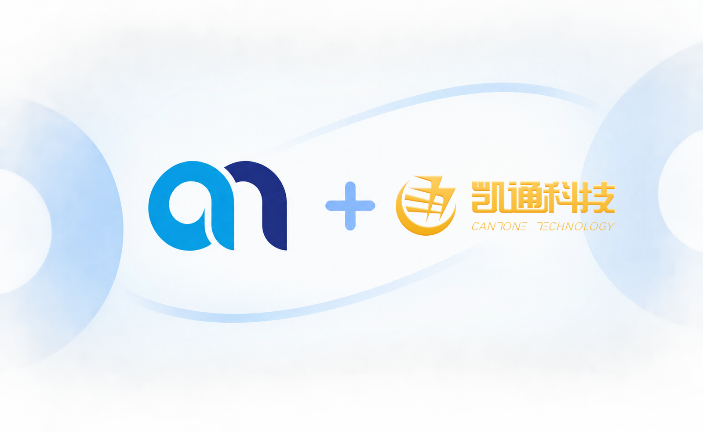

News · November 23, 2026 · by OpenAN

The OpenAN community is pleased to announce that Cantone Technology Co,. Ltd. has joined the project as an ecosystem participant. Its focus on domain-specific AI agents and open collaboration adds another perspective to the community's work toward autonomous networks.
Cantone Technology is a China-based organization participating in the OpenAN ecosystem. It plans to leverage the OpenAN Agent Framework to develop its own domain-specific AI agents, with a focus on enabling new commercial capabilities and service innovation. These plans bring a practical application perspective to the community's shared work on telecom-specific agents.
Cantone also aims to adopt the A2A-T interface to enable cross-domain, multi-agent collaboration. This planned exploration aligns with OpenAN's goals of driving closed-loop automation and accelerating the evolution toward L4 Autonomous Networks, while broadening the community working on open agent interoperability.
Follow the GitHub repositories and the project website for the latest updates.